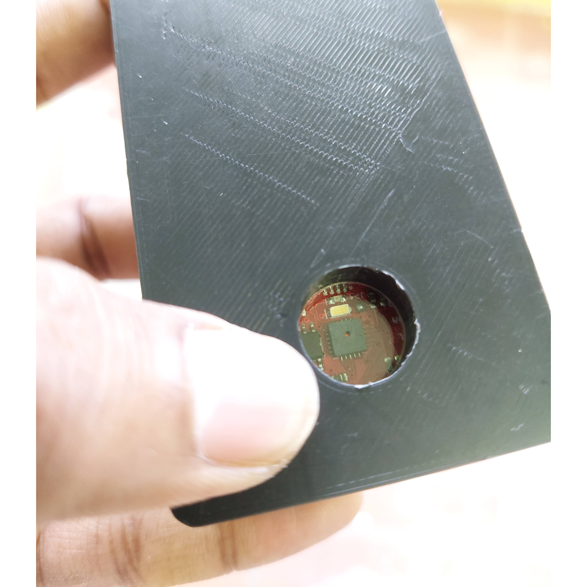
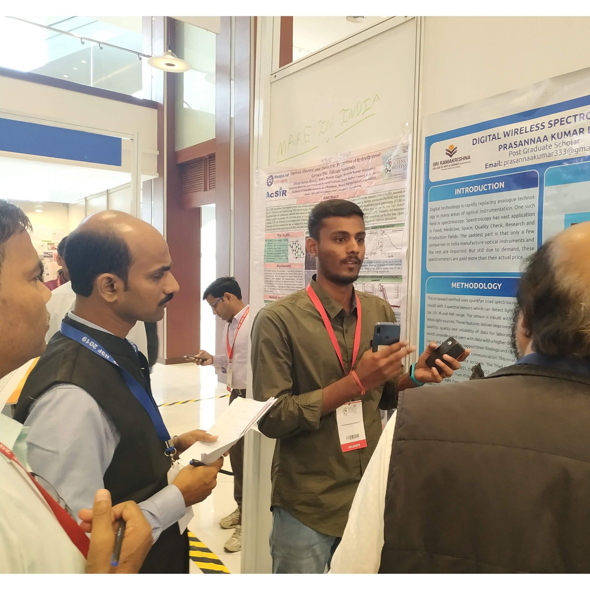

Solar Inverter Monitoring System

This project grew out of a simple idea: build a compact spectrometer that doesn’t need bulky optics, cables, or an external light source, yet still delivers meaningful spectral information. The result was a handheld digital wireless spectrometer, one of the first of its kind in its size and feature set.
The device covers key visible and near-infrared wavelengths. It can detect light at 610, 680, 730, 760, 810, and 860 nm, and can optionally sense 18 discrete bands from 410 to 940 nm, each with a 20 nm full-width half-max. That spread makes it useful across domains like food analysis, medicine, quality inspection, research labs, and even field work where carrying traditional spectroscopy equipment is not practical.

It was selected for presentation at the India International Science Festival (IISF) 2019 under the Young Scientists Conclave, where it was showcased as a poster project.